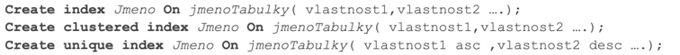

Index je struktura na disku, která je přidružená k tabulce nebo view
slouží k rychlému vyhledávání a filtrování dat v tabulkách
obsahuje klíče odpovídahjí jednomu nebo více sloupců v tabulce nebo view
jsou uloženy ve struktuře --> B-tree, která umožňuje serveru rychle a efektivně najít řádek nebo řádky odpovídajícím hodnotám
indexy můžeme vytvářet jako
klastrované--> řazerný index, který určuje logické i fyzické seřazení hodnost. V tabulce může být jen jeden --> je nejčastěji na PK (vytváří se automaticky při vyrtvoření tabulky)
-- Vytvoření clustered indexu na primární klíč tabulky Customers
ALTER TABLE Customers
ADD CONSTRAINT PK_Customers PRIMARY KEY CLUSTERED (CustomerID);
neklastrované--> určuje pouze logické seřazení nezávislé na fyzickém = jen určuje zobrazení, každá entita/view může mít maximálně 999 nonclustured indexů
-- Vytvoření non-clustered indexu na sloupec LastName v tabulce Customers
CREATE INDEX IX_Customers_LastName
ON Customers(LastName);
unique--> žádné 2 instance nesmí mít stejnou hodnotu

Struktura databázového souboru
Dobrovolné... zdroj : trust me bro
Transakční log --> ukládají se do něj veškeré akce apříkazy prováděné nad danou DB
Datový soubor MDF --> je rozdělen na stránky po 8KB
Druhy stánek
Přádné
Speciální - hlavičky souborů
Alokační mapy - seskupují stránky do jednoho "indexu" - heap index (rowset). Info o použitých a volných stránkách
Datové - obsahují data
Indexové
Sum-up
Index--> zrychluje vyhledávání v DB, ale zvětšije její velikost.
klastrovaný--> řadí data fyzicky i logicky, může být jen jeden v tabulce
neklastrovaný--> řadí data jen logicky. Může jich být až 999 na jedné tabulce